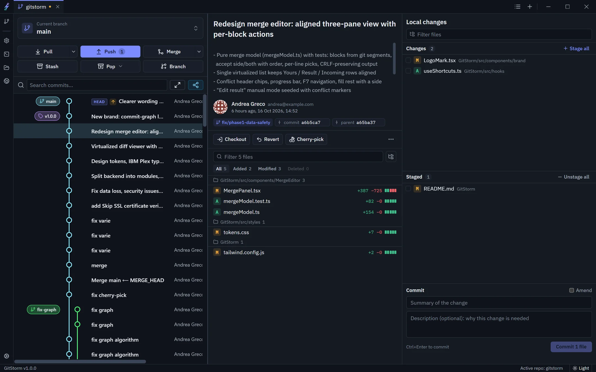
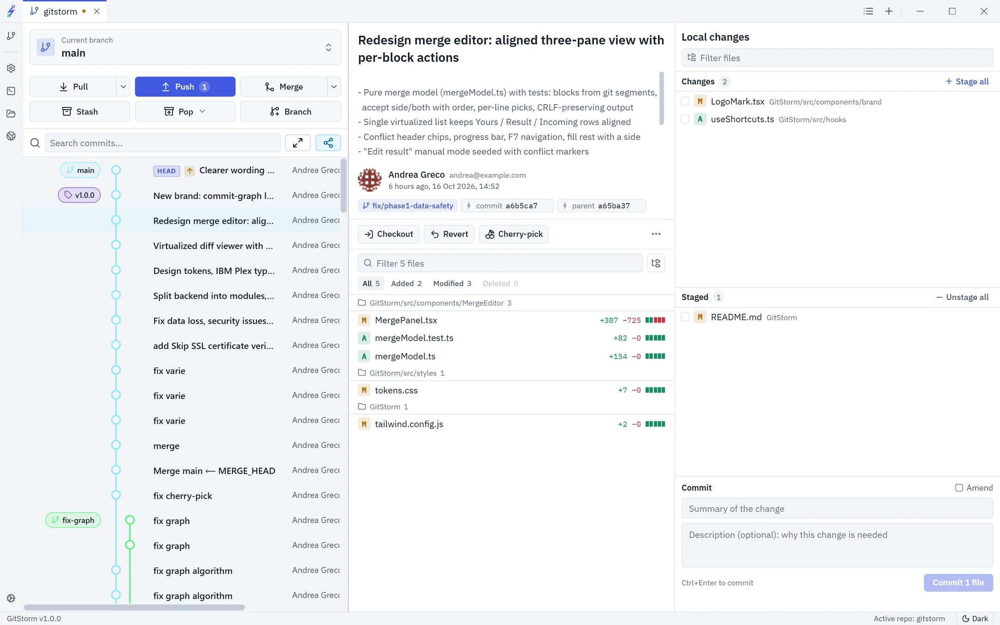
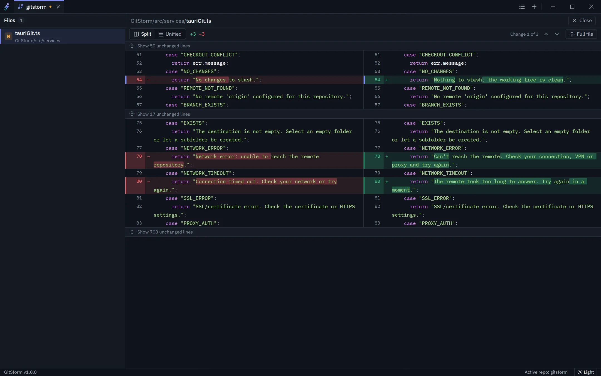
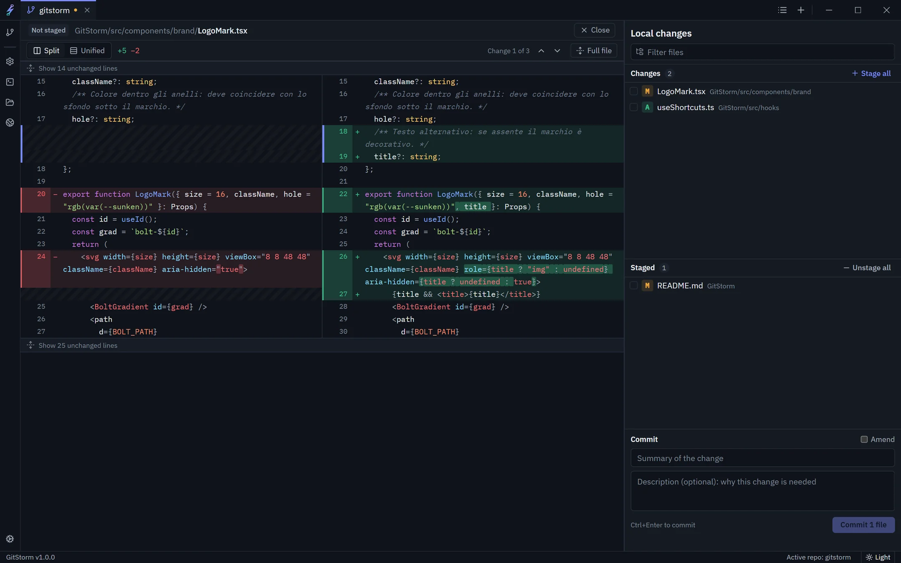
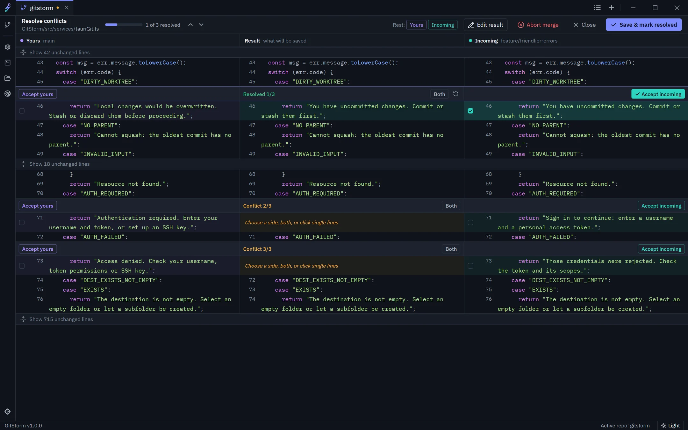
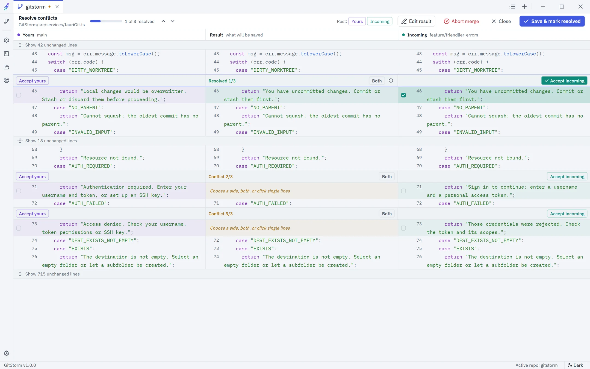
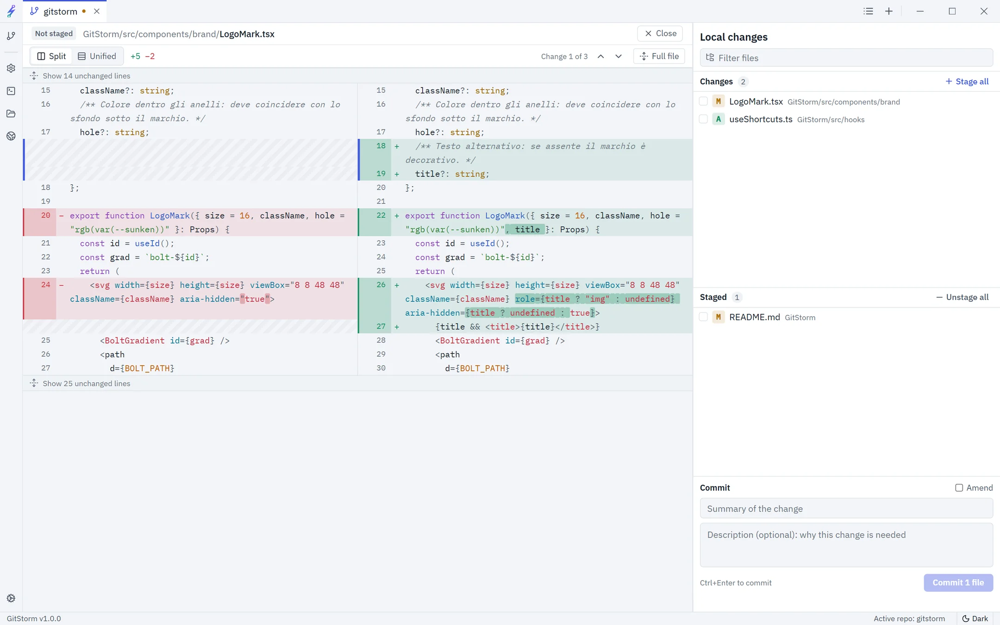

GitStorm is a desktop Git client built on Rust. Browse every branch in a live commit graph, review changes word by word and resolve conflicts line by line, all in one window.
Free. Version 1.1.0 for Windows 10/11 (x64) and macOS 11+ (Apple silicon). Also for Intel Macs and Linux.

Commit graph
Every branch in one scrollable history
The graph draws branches, merges and tags as you scroll, even on repositories with tens of thousands of commits. Click any commit to see who changed what and why.
Check out, revert or cherry-pick from any commit
Double-click a branch label to switch to it
Commits you haven't pushed yet are marked

Diff viewer
Changes you can read in seconds
Split or unified, with syntax highlighting. Unchanged code folds away and the edited words are highlighted inside each line, so a reworded message never looks like a rewrite.
Highlighting for more than 25 languages
F7 jumps to the next change
Huge and minified files open only when you ask

Staging
Commit exactly what you meant to
Changed and staged files sit side by side with the commit message underneath. Open any file to check its diff before it goes in.
Stage, unstage or discard one file or everything
Ctrl + Enter commits
Uses the name and email from your Git config

Merge editor
Resolve conflicts line by line
Your version, the result and the incoming change stay aligned row by row. Accept a side, keep both in the order you choose, or pick single lines. GitStorm warns you before saving a file with conflicts left.
Accept yours, incoming or both with one click
A progress bar and F7 to move between conflicts
Edit the result by hand when you need to

The everyday Git work, done well
Everything you reach for in a normal day, in a native app that starts fast.
Built on Rust
Tauri and libgit2 instead of Electron and shell calls. A small installer, low memory use and a fast start.
Branches
Create, rename, delete and switch branches, track upstreams and see what's ahead or behind.
Merge and rebase
Start a merge or rebase from the toolbar. Your uncommitted work is never overwritten.
Stash and tags
Park unfinished work in a stash and bring it back later. Create annotated or lightweight tags from any commit.
Always up to date
GitStorm watches the repository. Commit or pull from a terminal and the graph refreshes on its own.
SSH and tokens
Ed25519 and RSA keys, ssh-agent and access tokens. Tokens are kept in your system keychain, not in a config file.
Undo your last step
Ctrl + Z takes back the last commit, merge, pull, rebase or branch switch. Your files are never overwritten, and redo is one key away.
Commit messages, written locally
Optional: a model running on your computer, such as Ollama, suggests a message from your staged changes. Your code never leaves the machine.
Command palette
Press Ctrl + K and type: pull, push, switch or merge any branch, stage everything, commit.

Light theme

Every panel works in both themes
Native, open technologies
No embedded browser engine to ship and no shell commands behind the scenes.
Tauri 2Rustlibgit2ReactTypeScriptOpenSSL
Download GitStorm
Free for Windows, macOS and Linux. Open a repository and you're ready.